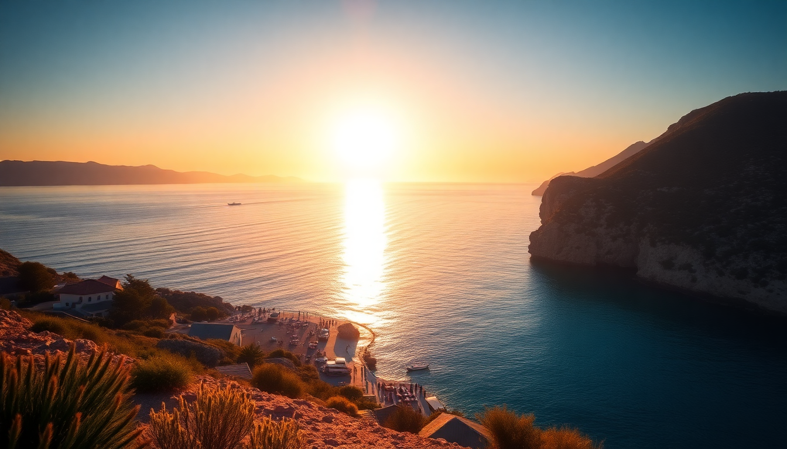

Best Beaches in Spain: Costa Brava, Balearics & Canaries

I’ve spent the last three summers bouncing between Spain’s coastlines—Costa Brava’s rocky coves, Mallorca’s turquoise calas, Ibiza’s bohemian strips, and Tenerife’s volcanic black sand. None of this is sponsored. Just a friend who got sunburned in all the right places. Here’s what actually works for a beach trip.
What makes Costa Brava different from other Spanish coasts?
Costa Brava is not a lounge-on-a-lounger destination. It’s rugged, pine-scented, and dotted with hidden coves that require a short hike. I based myself in Tossa de Mar for a week, and every morning I walked the Camí de Ronda—a coastal path that connects Tossa to Lloret de Mar. The views are raw, not postcard-perfect.
- Cala Pola near Begur: small, pebbly, but almost never crowded. Bring water shoes.
- Platja de la Farella in Llançà: a wild beach with no services, but the snorkeling is top-tier.
- Cala Sa Boadella in Lloret: touristy but the water is glass-clear. Arrive before 10 AM to get a spot.
If you want a proper meal, skip the beachfront paella joints. Walk into town and eat at Els Trull in Tossa—their seafood fideuà is better than any paella I’ve had on the coast.
Is Mallorca worth the hype for beaches?
Yes, but only if you skip the crowded south. Cala d’Or is overrun with package tourists and jet skis. Instead, drive north to Cala Torta—an undeveloped, windswept beach with no umbrellas, no restaurants, just dunes and turquoise water. I sat there for three hours and saw maybe 15 people.
- Cala Varques: accessed by a 20-minute walk through a finca. No facilities, but caves to explore.
- Playa de Muro in Alcúdia: long, family-friendly, with shallow water. Good for a lazy day.
- Cala Deia near the village of Deia: small, pebbly, but the setting—cliffs and olive groves—is stunning.
I stayed at Hotel Can Cera in Palma’s old town, but for beach access, Hotel Bon Sol in Illetes is worth the splurge. Their breakfast terrace overlooks the bay.
Which Ibiza beaches are actually worth visiting?
Ibiza gets a bad rap for clubs and crowds, but the best beaches are on the quieter north and west coasts. Cala d’Hort faces the mystical rock of Es Vedrà; I watched the sunset there with a bottle of wine and no DJ in sight. Cala Comte is famous for its shallow, crystalline water, but it’s packed by noon—go at 8 AM or skip it.
- Cala Xarraca: a small cove with mud you can smear on your skin (locals swear by it for detox).
- Cala Benirràs: Sunday drum circles at sunset. It’s touristy but the vibe is genuine.
- Platja de ses Salines: the “see and be seen” beach. Overrated for swimming, but the beach bars (like Jockey Club) serve excellent grilled octopus.
For a hotel, I liked Hotel Rural Can Curreu in Sant Carles—it’s inland but a 10-minute drive to Cala Mastella. Avoid the main strip in San Antonio unless you want hangovers and hen parties.
What makes Tenerife’s beaches different from the other islands?
Tenerife has black sand. It’s not as photogenic as the white sand of Mallorca, but the water is warmer and the waves are bigger. Playa de las Teresitas near Santa Cruz is the exception—golden sand imported from the Sahara, but I found it weirdly sterile. I preferred Playa Jardín in Puerto de la Cruz: black volcanic sand, sculpted gardens, and a strong current that’s fun for body surfing.
- Playa de la Tejita near El Médano: wild, windy, and perfect for kitesurfing. No shade, so bring an umbrella.
- Playa de Benijo in Anaga Rural Park: remote, dramatic cliffs, and the best sunset on the island. The dirt road to get there is bumpy but manageable.
- Playa del Duque in Costa Adeje: manicured, calm, and full of sunbeds. Good if you want service, bad if you want solitude.
I ate at El Calderito de la Abuela in La Laguna—a tiny spot serving Canarian wrinkled potatoes with mojo sauce. That’s the real Tenerife, not the all-inclusive buffets.
When is the best time to visit these beaches?
June and September are the sweet spots. July and August are brutal—crowds, heat, and prices triple. I went to Costa Brava in late May and had entire coves to myself, but the water was still chilly (17°C). In Tenerife, the winter months (December to February) are fine for swimming because the water stays around 20°C. Mallorca and Ibiza shut down in November—many beach bars and restaurants close until April.
- Costa Brava: May–June or September–October.
- Mallorca: May–June or September.
- Ibiza: June or late September (avoid August at all costs).
- Tenerife: March–May or October–November for the best balance of sun and space.
What should I pack for a beach trip to Spain?
Water shoes. Seriously. Many of the best coves (especially in Costa Brava and Mallorca) are pebbly, and the sea urchins are real. I also brought a ripstop nylon towel (dries fast, packs small) and a UV-protection rash guard for snorkeling. A small dry bag is essential for the Camí de Ronda hikes—you’ll want to stash your phone and keys while swimming.
- Reef-safe sunscreen: Spanish pharmacies sell brands like Isdin and Heliocare. Skip the aerosol sprays—they’re banned on some beaches.
- Snorkel mask: I bought a Cressi mask in Barcelona for €40. Worth every euro for Cala Varques.
- Lightweight long-sleeve shirt: for evenings when the wind picks up, especially in Tenerife.
FAQ
Are the beaches in Spain free to access? Most are public and free. Some urban beaches (like Playa del Duque in Tenerife) have paid sunbed rentals, but you can always lay your towel on the sand. A few coves in Costa Brava require paying for parking at nearby restaurants, but that’s the only cost.
Can I drink alcohol on Spanish beaches? In most regions, yes, but discreetly. Bans exist in some tourist-heavy areas (like parts of Ibiza and Mallorca) during summer, and fines can be steep. I’ve never had an issue with a beer or wine, but avoid glass bottles—broken glass on beaches is a real problem.
Which beach is best for families? Playa de Muro in Mallorca has shallow, calm water and lifeguards. Playa Jardín in Tenerife is also family-friendly, with playgrounds and gentle waves. Avoid Costa Brava’s coves if you have toddlers—the access paths are steep and rocky.
Conclusion
- Costa Brava: best for hikers and snorkelers who don’t mind pebbles. Base yourself in Tossa de Mar.
- Mallorca: skip the south, head north to Cala Torta or Cala Varques for solitude.
- Ibiza: Cala d’Hort for sunset, Cala Xarraca for quiet. Avoid August.
- Tenerife: black sand beaches in the north (Playa Jardín) or wind sports in El Médano. Pack water shoes and reef-safe sunscreen.